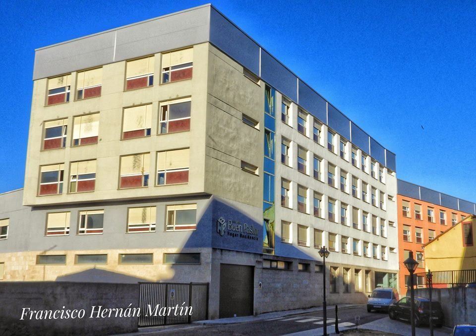
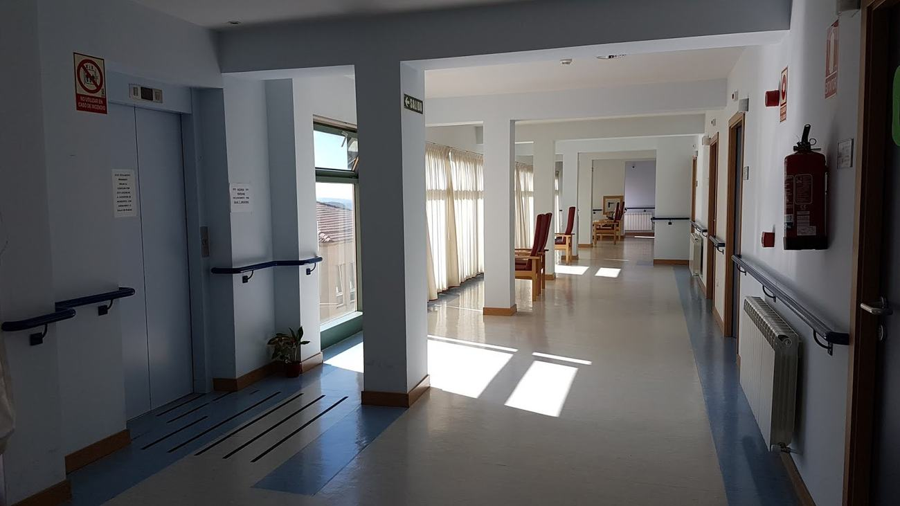
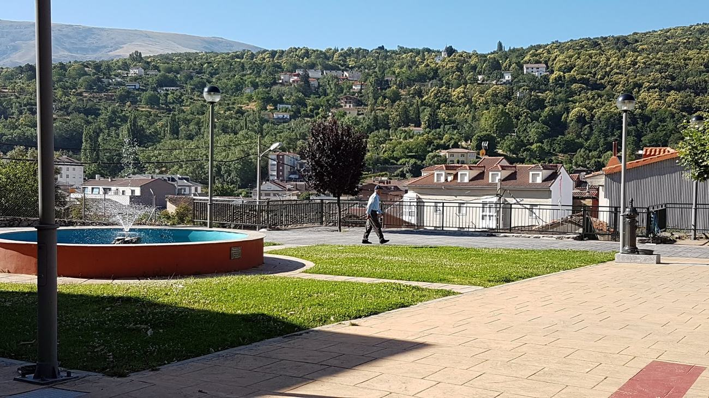
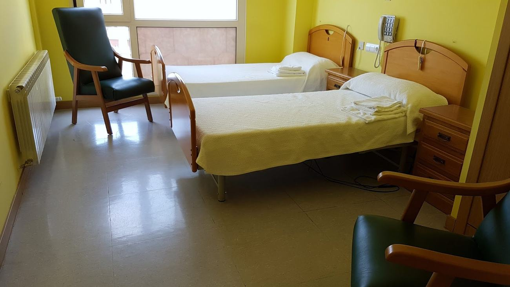
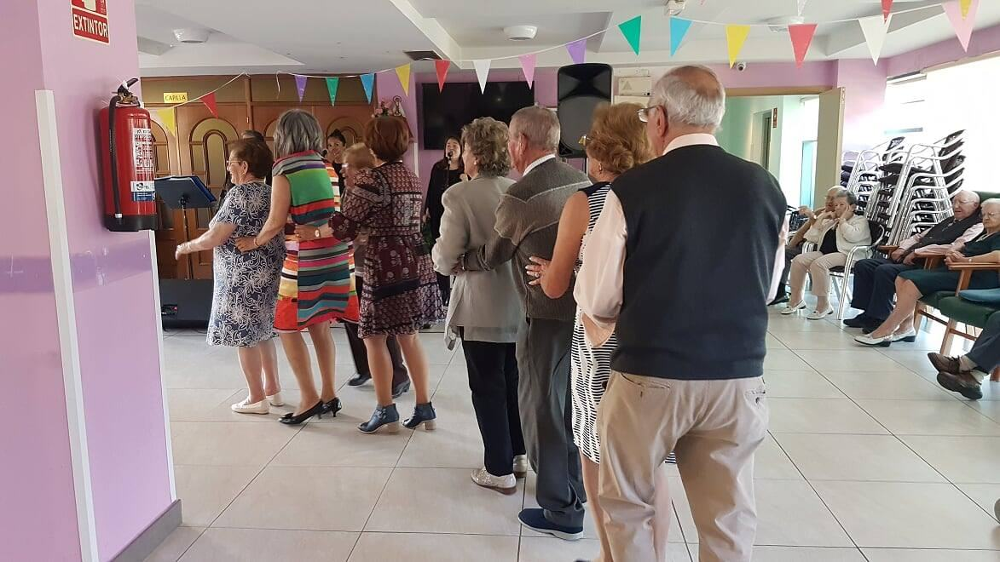
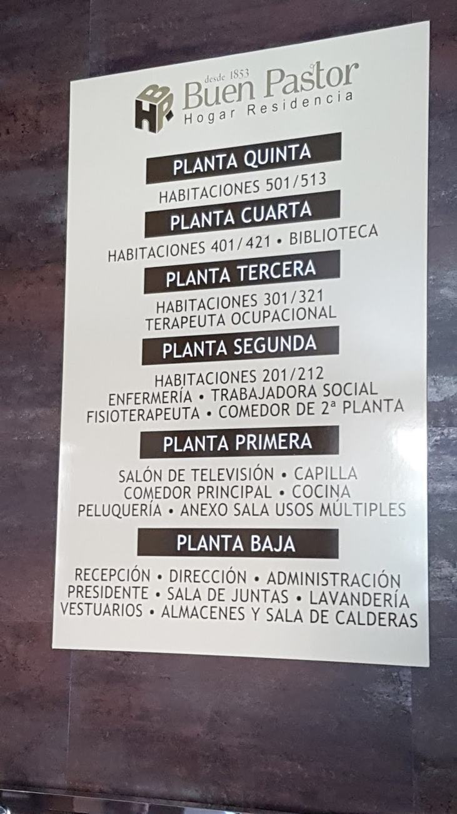
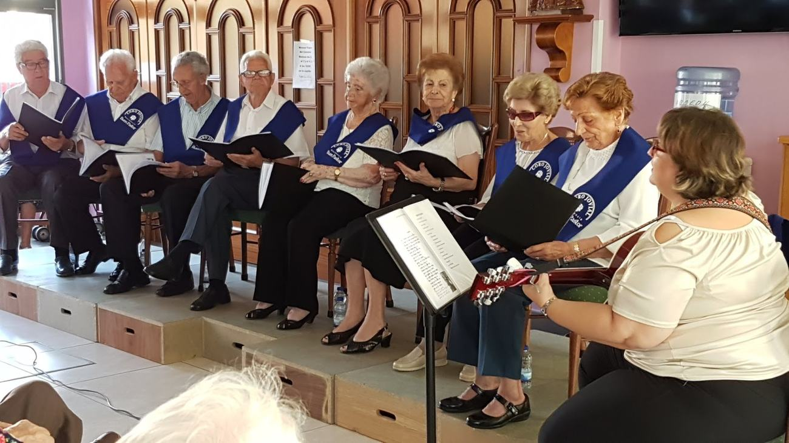
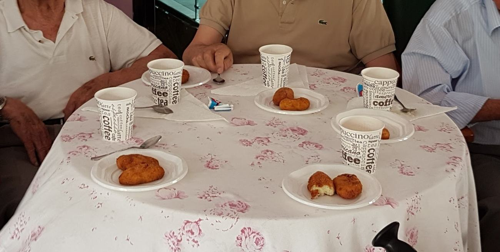
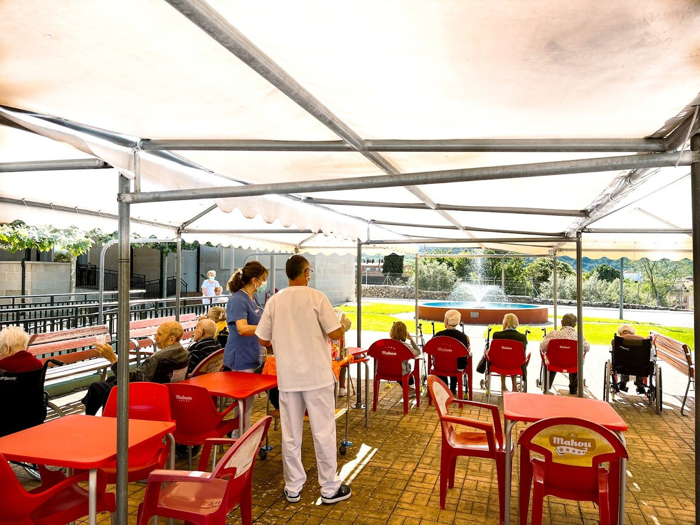

Un hogar seguro para quienes más queremos
En El Buen Pastor cuidamos a personas mayores con atención integral, cocina propia, jardín, actividades y una trayectoria de más de 170 años al servicio de Béjar.


Cercanía, historia y confianza
Una asociación privada sin ánimo de lucro dedicada al cuidado de personas mayores. Una residencia con arraigo bejarano, gestionada con vocación de servicio y una idea sencilla: que cada residente se sienta acompañado, atendido y en casa.
Trato humano y familiar
Atención cercana para residentes y familias, con acompañamiento en el proceso de ingreso.
Institución bejarana
Más de siglo y medio vinculada a la vida social de Béjar.
Entidad sin ánimo de lucro
La prioridad es el cuidado, la convivencia y el bienestar de las personas mayores.
Más de 170 años cuidando
El Buen Pastor nació en 1853 para atender a personas necesitadas y ha evolucionado hasta convertirse en un centro residencial adaptado a las necesidades actuales.
Apertura de la institución en Nochebuena.
Inauguración de la sede actual en Calle Flamencos.
Medalla de Oro de la Ciudad de Béjar.
Reconocimiento de la Junta de Castilla y León por la calidad de vida de las personas mayores.
Atención integral en el propio centro
Servicios asistenciales, sanitarios, sociales y de ocio coordinados para facilitar el día a día.
Salud
Medicina general, enfermería, farmacia y seguimiento diario.
Rehabilitación
Fisioterapia, gimnasio y mantenimiento de la movilidad.
Terapia ocupacional
Estimulación cognitiva, talleres y actividades funcionales.
Nutrición
Cocina propia y dietas adaptadas a las necesidades de cada persona.
Trabajo social
Orientación y apoyo a residentes y familiares.
Ocio y comunidad
Biblioteca, prensa, sala multimedia, celebraciones, huerto y coro.
Espacios reales para vivir bien
Habitaciones, jardín, galerías soleadas y zonas comunes diseñadas para la convivencia, el descanso y la atención diaria.




Distribución del edificio
Recepción, administración, lavandería, salones, comedor, capilla, cocina propia, consulta médica, enfermería, gimnasio y plantas residenciales.
Habitaciones
Habitaciones individuales y dobles con baño adaptado, cama articulada, llamador de emergencia, teléfono, televisión, armario y luz natural.
Cuidar también es acompañar
La residencia promueve convivencia, participación y bienestar emocional: gimnasia adaptada, estimulación cognitiva, manualidades, celebraciones, huerto urbano, actividades al aire libre y el Coro Jovial.


Meriendas
Aire libre¿Quiere conocer la residencia?
La mejor forma de decidir es hablar con el centro y resolver dudas sobre plazas, requisitos, cuidados y vida diaria.
Le orientamos paso a paso
Para disponibilidad de plazas, documentación o requisitos de admisión, contacte directamente con la residencia. El equipo le informará de forma personalizada.
Solicite información
Llamada o email para resolver dudas iniciales.
Conozca el centro
Puede concertar visita para ver instalaciones y ambiente.
Proceso de admisión
Información sobre documentación, disponibilidad y condiciones.
Hablemos con calma
Estamos en Calle Flamencos, 12, Béjar. Llámenos, escriba o abra la ubicación para llegar directamente.
¿Tiene plazas concertadas?
La información pública del centro indica que no dispone de plazas concertadas. Conviene confirmar disponibilidad y condiciones directamente con la residencia.
¿La estancia es temporal o permanente?
La residencia informa de estancias permanentes. Para casos concretos, contacte con el centro.
¿Puedo visitar la residencia antes de decidir?
Sí, lo recomendable es llamar para concertar una visita y resolver dudas personalmente.